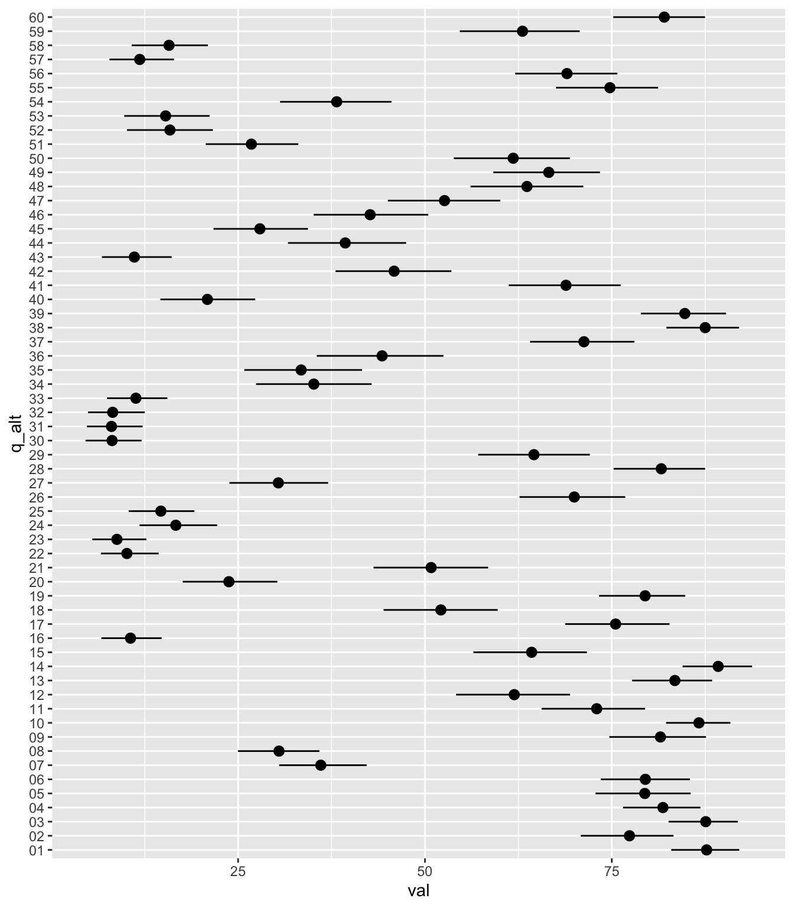
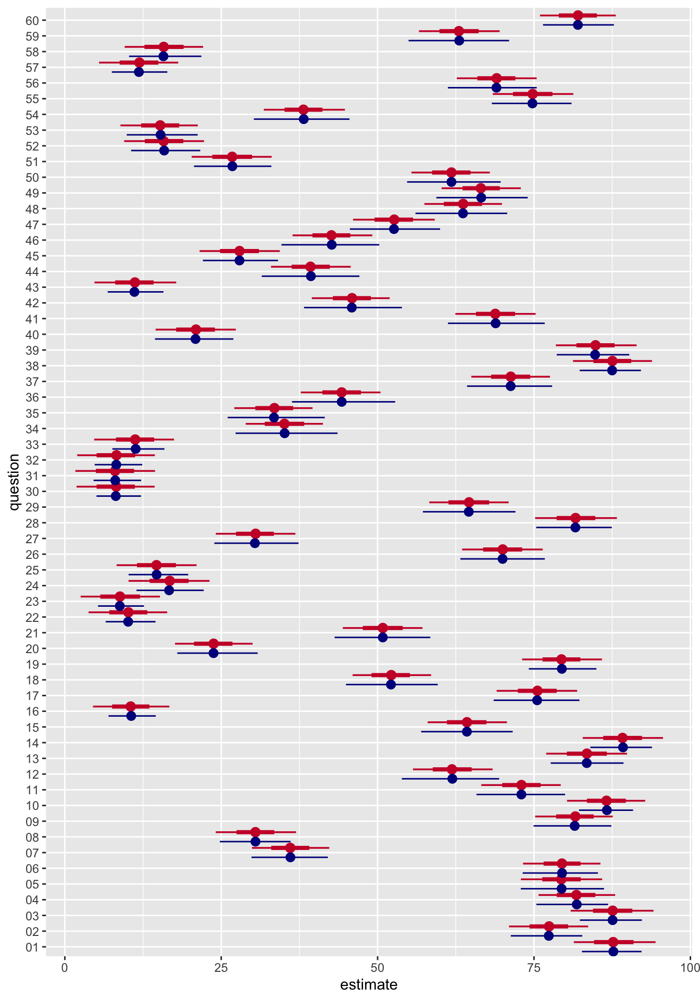

library("ggplot2")
library("readxl")
library("dplyr")
library("janitor")
library("glue")
library("tidyr")
library("stringr")
library("forcats")
library("here")
library("tibble")
library("ggdist")
library("brms")Alternative analysis
This is a proof of concept of the other type of analysis I mentioned today. The way it works it simple. You can suppress the intercept in a linear model if you want to. If you do this and one of your predictors is a categorical factor, it will estimate the mean for each level of the factor (if you have notes from class, we learned about this in the lecture on coding strategies for categorical predictors). So, long story short, you can suppress the intercept in your model and fit the interaction between political_orientation and question. You will get an estimate for every level of political_orientation for each question. This won’t give you any comparisons. You will have to do all of those post-hoc (but you were doing that anyway). So… let’s load some libraries:
Now we load the data:
qp_data_raw_1 <- read_excel(here("../data/qp_data_raw_1.xls")) |>
clean_names() For this example, I am only going to select the relevant columns of the data frame and I am going to rename all of the questions (the labels are really long). This isn’t really practical, but it makes it easier for you to see how this works.
# Load data and pivot longer
dat_temp <- qp_data_raw_1 |>
select(
political_orientation,
i_like_that_people_use_catalan:catalan_is_an_identity_element_of_the_balearic_islands) |>
mutate(id = seq(1, nrow(qp_data_raw_1)), 1) |>
pivot_longer(
cols = -c("political_orientation", "id"),
names_to = "question",
values_to = "val"
) |>
filter(!is.na(val), question != 1)
# Create tibble of names and alternative labels
alt_question_labels <- tibble(
question = dat_temp$question |> unique(),
q_alt = 1:60
) |>
mutate(
q_alt = str_pad(q_alt, width = 2, pad = "0")
)
# Add alternative labels to data frame
dat <- dat_temp |>
left_join(alt_question_labels, by = "question") We can visualize the raw data with the newly arranged set-up, but we will ignore political orientation for now:
dat |>
mutate(q_alt = fct_reorder(q_alt, val, max)) |>
ggplot() +
aes(x = val, y = q_alt) +
stat_summary(fun.data = mean_cl_boot, geom = "pointrange")

You can see how this allows us to calculate a mean for each question. Now we will fit a model (as described above, but still ignoring political_orientation).
mod_0 <- brm(
val ~ 0 + q_alt,
data = dat,
cores = 4, chains = 4, threads = threading(2),
file = here("mod_0")
)
mod_0 Family: gaussian
Links: mu = identity; sigma = identity
Formula: val ~ 0 + q_alt
Data: dat (Number of observations: 5940)
Draws: 4 chains, each with iter = 2000; warmup = 1000; thin = 1;
total post-warmup draws = 4000
Regression Coefficients:
Estimate Est.Error l-95% CI u-95% CI Rhat Bulk_ESS Tail_ESS
q_alt01 87.72 3.32 81.37 94.44 1.00 7181 2682
q_alt02 77.40 3.25 71.01 83.66 1.00 6221 2874
q_alt03 87.55 3.34 80.87 94.11 1.00 5252 3071
q_alt04 81.79 3.19 75.73 87.97 1.00 5649 3130
q_alt05 79.37 3.24 72.91 85.89 1.00 6346 3260
q_alt06 79.47 3.15 73.25 85.62 1.00 5967 2947
q_alt07 36.05 3.18 29.91 42.27 1.00 6063 3009
q_alt08 30.49 3.21 24.13 36.95 1.00 6413 2755
q_alt09 81.56 3.15 75.19 87.58 1.00 6534 2846
q_alt10 86.57 3.26 80.28 92.78 1.00 6271 3297
q_alt11 72.94 3.21 66.58 79.28 1.00 6599 3101
q_alt12 61.89 3.23 55.66 68.38 1.00 6379 2679
q_alt13 83.45 3.35 76.96 89.87 1.00 6850 2896
q_alt14 89.18 3.27 82.79 95.63 1.00 5315 2711
q_alt15 64.25 3.27 58.00 70.68 1.00 5912 2838
q_alt16 10.55 3.15 4.50 16.71 1.00 6563 3157
q_alt17 75.53 3.28 69.03 81.90 1.00 5929 2852
q_alt18 52.14 3.20 46.00 58.55 1.00 6317 2992
q_alt19 79.38 3.22 73.10 85.87 1.00 7210 3090
q_alt20 23.76 3.20 17.61 30.01 1.00 5054 2740
q_alt21 50.83 3.27 44.43 57.17 1.00 5681 3051
q_alt22 10.13 3.20 3.79 16.36 1.00 5792 3141
q_alt23 8.83 3.28 2.53 15.20 1.00 5739 3032
q_alt24 16.69 3.27 10.18 23.13 1.00 6013 3273
q_alt25 14.67 3.28 8.28 21.06 1.00 5803 2876
q_alt26 69.98 3.30 63.51 76.40 1.00 6264 2749
q_alt27 30.44 3.23 24.13 36.86 1.00 7153 2914
q_alt28 81.67 3.28 75.18 88.25 1.00 5599 3053
q_alt29 64.60 3.36 58.26 70.95 1.00 6381 2969
q_alt30 8.16 3.19 1.87 14.36 1.00 5741 2808
q_alt31 8.00 3.19 1.69 14.42 1.00 7095 2665
q_alt32 8.18 3.23 1.98 14.39 1.00 5960 3202
q_alt33 11.23 3.24 4.69 17.46 1.00 6177 3202
q_alt34 35.10 3.23 28.92 41.26 1.00 5680 3041
q_alt35 33.46 3.21 27.09 39.60 1.00 5267 2865
q_alt36 44.24 3.22 37.72 50.46 1.00 5464 3074
q_alt37 71.26 3.23 64.98 77.55 1.00 6002 2474
q_alt38 87.53 3.19 81.24 93.86 1.00 5884 3088
q_alt39 84.84 3.29 78.50 91.40 1.00 6031 3076
q_alt40 20.92 3.28 14.51 27.33 1.00 5253 3136
q_alt41 68.85 3.29 62.43 75.26 1.00 6371 2731
q_alt42 45.86 3.20 39.48 51.93 1.00 5939 3203
q_alt43 11.15 3.27 4.74 17.80 1.00 5618 2937
q_alt44 39.29 3.23 32.96 45.70 1.00 6357 3169
q_alt45 27.91 3.26 21.54 34.36 1.00 7200 3305
q_alt46 42.63 3.20 36.40 49.15 1.00 5623 2867
q_alt47 52.59 3.26 46.08 59.13 1.00 6070 3097
q_alt48 63.66 3.18 57.48 69.88 1.00 5539 3149
q_alt49 66.53 3.19 60.23 72.89 1.00 5697 2875
q_alt50 61.78 3.21 55.42 67.94 1.00 6760 3146
q_alt51 26.74 3.31 20.28 33.06 1.00 4929 2847
q_alt52 15.86 3.23 9.48 22.26 1.00 5524 3162
q_alt53 15.23 3.17 8.89 21.25 1.00 4682 3260
q_alt54 38.17 3.27 31.81 44.77 1.00 7179 3180
q_alt55 74.78 3.31 68.41 81.28 1.00 6294 2720
q_alt56 69.01 3.22 62.66 75.43 1.00 5845 3002
q_alt57 11.86 3.25 5.47 18.12 1.00 6986 2894
q_alt58 15.82 3.23 9.57 22.10 1.00 6684 3169
q_alt59 63.02 3.28 56.61 69.50 1.00 6974 2923
q_alt60 82.02 3.14 75.96 88.07 1.00 6162 3129
Further Distributional Parameters:
Estimate Est.Error l-95% CI u-95% CI Rhat Bulk_ESS Tail_ESS
sigma 32.14 0.30 31.58 32.73 1.00 5689 3097
Draws were sampled using sampling(NUTS). For each parameter, Bulk_ESS
and Tail_ESS are effective sample size measures, and Rhat is the potential
scale reduction factor on split chains (at convergence, Rhat = 1).We can plot the raw means and the posterior estimates from the model together. This is a good way to see how the model does essentially the same thing.
as_tibble(mod_0) |>
select(starts_with("b_")) |>
pivot_longer(
cols = everything(),
names_to = "question",
values_to = "estimate"
) |>
mutate(question = str_remove(question, "b_q_alt")) |>
ggplot() +
aes(x = estimate, y = question) +
stat_pointinterval(position = position_nudge(y = 0.3), color = "#cc0033") +
stat_summary(
data = dat,
aes(x = val, y = q_alt),
fun.data = mean_cl_boot,
geom = "pointrange",
position = position_nudge(y = -0.3),
color = "darkblue"
)

Before doing the same thing with political_orientation, it is worth mentioning that this isn’t really the best model. Specifically, we have data that are bounded between 0 and 100. As is, the model likelihood is gaussian, which means it assumes that the data generating process can range from \(-\infty\) to \(\infty\), but we know that the data only ranges from 0 to 100. In theory we want a likelihood that takes this into account. The answer is beta regression (essentially just changing the likelihood to the beta distribution), but we will leave that for another day. Here is our compromise:
mod_1 <- brm(
val ~ 0 + q_alt:political_orientation,
data = dat,
cores = 4, chains = 4, threads = threading(2),
file = here("mod_1")
)Instead of printing the model summary, I will generate the longest table you have ever seen:
as_tibble(mod_1) |>
select(starts_with("b_")) |>
pivot_longer(
cols = everything(),
names_to = "question",
values_to = "estimate"
) |>
separate(question, into = c("question", "political_orientation"), sep = ":") |>
mutate(
question = str_remove(question, "b_q_alt"),
political_orientation = str_remove(
political_orientation, "political_orientation"
)
) |>
group_by(question, political_orientation) |>
median_qi(estimate) |>
mutate_if(is.numeric, round, digits = 3) |>
transmute(
Question = question,
`Political orientation` = political_orientation,
`Median (HDI)` = glue("{estimate} [{.lower}, {.upper}]")
) |>
knitr::kable(align = c("l", "l", "r"))| Question | Political orientation | Median (HDI) |
|---|---|---|
| 01 | CenterMLeft | 91.738 [78.662, 105.033] |
| 01 | CenterMRight | 74.197 [56.354, 91.896] |
| 01 | Centre | 64.173 [36.494, 91.786] |
| 01 | Farleft | 100.064 [77.543, 122.353] |
| 01 | Left | 92.364 [83.789, 100.795] |
| 01 | Right | 71.818 [49.023, 93.509] |
| 02 | CenterMLeft | 79.664 [66.01, 92.88] |
| 02 | CenterMRight | 87.327 [69.855, 104.643] |
| 02 | Centre | 77.476 [50.177, 105.135] |
| 02 | Farleft | 67.108 [44.444, 89.707] |
| 02 | Left | 75.075 [66.225, 83.583] |
| 02 | Right | 80.449 [58.654, 102.512] |
| 03 | CenterMLeft | 91.368 [78.904, 104.004] |
| 03 | CenterMRight | 76.702 [59.205, 93.949] |
| 03 | Centre | 63.312 [36.055, 90.435] |
| 03 | Farleft | 100.003 [77.991, 122.224] |
| 03 | Left | 93.088 [83.944, 102.117] |
| 03 | Right | 62.957 [40.498, 85.631] |
| 04 | CenterMLeft | 81.781 [68.812, 95.495] |
| 04 | CenterMRight | 93.866 [76.15, 111.507] |
| 04 | Centre | 82.903 [55.877, 109.091] |
| 04 | Farleft | 76.796 [53.28, 101.371] |
| 04 | Left | 78.549 [69.734, 87.026] |
| 04 | Right | 87.375 [64.39, 110.21] |
| 05 | CenterMLeft | 80.791 [66.883, 94.177] |
| 05 | CenterMRight | 57.787 [40.04, 75.319] |
| 05 | Centre | 56.244 [30.648, 83.209] |
| 05 | Farleft | 99.914 [77.644, 122.047] |
| 05 | Left | 88.772 [80.199, 97.341] |
| 05 | Right | 44.19 [19.636, 68.786] |
| 06 | CenterMLeft | 74.72 [61.391, 87.448] |
| 06 | CenterMRight | 97.637 [80.277, 114.647] |
| 06 | Centre | 82.051 [55.504, 108.344] |
| 06 | Farleft | 61.971 [38.95, 85.48] |
| 06 | Left | 78.186 [69.509, 86.89] |
| 06 | Right | 87.136 [64.233, 109.764] |
| 07 | CenterMLeft | 47.842 [34.321, 61.112] |
| 07 | CenterMRight | 32.271 [15.527, 49.161] |
| 07 | Centre | 23.171 [-4.809, 49.878] |
| 07 | Farleft | 27.559 [4.786, 50.266] |
| 07 | Left | 33.212 [24.294, 42.217] |
| 07 | Right | 45.695 [23.312, 68.006] |
| 08 | CenterMLeft | 39.179 [26.173, 52.745] |
| 08 | CenterMRight | 34.62 [17.663, 51.889] |
| 08 | Centre | 22.947 [-4.927, 49.921] |
| 08 | Farleft | 18.711 [-4.55, 41.693] |
| 08 | Left | 28.306 [19.706, 37.116] |
| 08 | Right | 29.362 [5.264, 54.055] |
| 09 | CenterMLeft | 89.366 [76.022, 102.935] |
| 09 | CenterMRight | 60.875 [44.054, 78.271] |
| 09 | Centre | 61.639 [35.541, 87.736] |
| 09 | Farleft | 97.241 [75.165, 120.744] |
| 09 | Left | 87.049 [78.208, 95.648] |
| 09 | Right | 55.064 [31.902, 77.881] |
| 10 | CenterMLeft | 86.607 [73.358, 100.544] |
| 10 | CenterMRight | 95.232 [78.113, 112.656] |
| 10 | Centre | 77.632 [51.711, 103.366] |
| 10 | Farleft | 83.77 [60.735, 106.985] |
| 10 | Left | 87.797 [79.082, 96.422] |
| 10 | Right | 74.108 [51.347, 96.538] |
| 11 | CenterMLeft | 78.185 [64.225, 91.64] |
| 11 | CenterMRight | 46.447 [29.477, 63.334] |
| 11 | Centre | 45.237 [18.47, 72.057] |
| 11 | Farleft | 94.113 [71.394, 117.072] |
| 11 | Left | 81.522 [72.421, 90.982] |
| 11 | Right | 43.513 [20.619, 65.394] |
| 12 | CenterMLeft | 56.451 [43.316, 69.785] |
| 12 | CenterMRight | 98.87 [82.523, 115.992] |
| 12 | Centre | 51.313 [24.535, 78.204] |
| 12 | Farleft | 44.449 [21.786, 67.004] |
| 12 | Left | 55.427 [46.673, 64.315] |
| 12 | Right | 84.168 [61.878, 106.909] |
| 13 | CenterMLeft | 79.847 [66.072, 93.064] |
| 13 | CenterMRight | 70.51 [52.626, 88.263] |
| 13 | Centre | 56.249 [28.507, 83.785] |
| 13 | Farleft | 100.07 [78.159, 122.238] |
| 13 | Left | 91.98 [83.395, 100.857] |
| 13 | Right | 60.188 [37.338, 82.66] |
| 14 | CenterMLeft | 85.586 [71.786, 99.978] |
| 14 | CenterMRight | 99.112 [81.484, 116.163] |
| 14 | Centre | 79.999 [52.611, 107.336] |
| 14 | Farleft | 92.994 [69.814, 115.054] |
| 14 | Left | 89.989 [81.779, 98.172] |
| 14 | Right | 78.986 [56.511, 101.573] |
| 15 | CenterMLeft | 72.615 [59.676, 85.836] |
| 15 | CenterMRight | 31.872 [14.387, 49.256] |
| 15 | Centre | 13.528 [-13.564, 40.331] |
| 15 | Farleft | 97.95 [74.416, 120.823] |
| 15 | Left | 70.772 [62.173, 79.359] |
| 15 | Right | 54.415 [31.13, 78.039] |
| 16 | CenterMLeft | 5.42 [-8.546, 19.465] |
| 16 | CenterMRight | 8.265 [-8.607, 25.407] |
| 16 | Centre | 15.092 [-11.568, 40.651] |
| 16 | Farleft | 3.742 [-19.453, 27.426] |
| 16 | Left | 10.561 [2.029, 18.959] |
| 16 | Right | 33.802 [11.204, 55.988] |
| 17 | CenterMLeft | 75.946 [61.603, 90.012] |
| 17 | CenterMRight | 89.021 [71.476, 107.028] |
| 17 | Centre | 92.156 [65.696, 118.942] |
| 17 | Farleft | 66.854 [44.158, 89.598] |
| 17 | Left | 72.32 [63.648, 80.983] |
| 17 | Right | 70.224 [47.938, 92.499] |
| 18 | CenterMLeft | 51.227 [38.167, 64.632] |
| 18 | CenterMRight | 28.253 [11.086, 45.545] |
| 18 | Centre | 25.818 [0.868, 52.076] |
| 18 | Farleft | 78.706 [56.526, 101.332] |
| 18 | Left | 60.483 [51.889, 69.28] |
| 18 | Right | 29.696 [7.735, 51.529] |
| 19 | CenterMLeft | 86.558 [73.305, 100.044] |
| 19 | CenterMRight | 79.724 [63.079, 96.978] |
| 19 | Centre | 84.729 [58.207, 111.436] |
| 19 | Farleft | 93.871 [69.489, 116.848] |
| 19 | Left | 76.965 [68.141, 85.577] |
| 19 | Right | 58.221 [35.132, 80.987] |
| 20 | CenterMLeft | 18.028 [3.818, 31.874] |
| 20 | CenterMRight | 27.341 [9.819, 45.06] |
| 20 | Centre | 23.131 [-3.575, 50.829] |
| 20 | Farleft | 10.574 [-12.401, 33.283] |
| 20 | Left | 22.564 [13.73, 31.043] |
| 20 | Right | 55.758 [32.607, 78.446] |
| 21 | CenterMLeft | 50.527 [37.513, 64.121] |
| 21 | CenterMRight | 8.784 [-9.04, 26.695] |
| 21 | Centre | 28.288 [1.572, 54.05] |
| 21 | Farleft | 82.521 [60.561, 105.305] |
| 21 | Left | 63.47 [54.861, 71.926] |
| 21 | Right | 21.958 [-1.286, 45.191] |
| 22 | CenterMLeft | 12.48 [-1.468, 25.883] |
| 22 | CenterMRight | 17.908 [-0.082, 36.247] |
| 22 | Centre | 9.464 [-17.176, 36.451] |
| 22 | Farleft | 2.413 [-19.715, 25.469] |
| 22 | Left | 6.057 [-2.734, 14.772] |
| 22 | Right | 26.067 [3.261, 48.829] |
| 23 | CenterMLeft | 10.417 [-2.816, 23.442] |
| 23 | CenterMRight | 7.168 [-10.662, 24.834] |
| 23 | Centre | 5.258 [-21.683, 31.739] |
| 23 | Farleft | 2.218 [-21.889, 25.794] |
| 23 | Left | 8.465 [-0.026, 17.202] |
| 23 | Right | 17.621 [-4.875, 40.8] |
| 24 | CenterMLeft | 20.632 [6.998, 34.11] |
| 24 | CenterMRight | 30.163 [12.434, 47.838] |
| 24 | Centre | 39.627 [12.993, 66.803] |
| 24 | Farleft | 2.113 [-21.197, 25.177] |
| 24 | Left | 10.443 [2.105, 18.775] |
| 24 | Right | 23.16 [-0.287, 46.072] |
| 25 | CenterMLeft | 13.291 [0.198, 26.761] |
| 25 | CenterMRight | 15.324 [-2.331, 32.703] |
| 25 | Centre | 22.321 [-4.915, 49.648] |
| 25 | Farleft | 3.326 [-19.877, 26.612] |
| 25 | Left | 15.109 [5.945, 23.797] |
| 25 | Right | 20.618 [-1.287, 43.878] |
| 26 | CenterMLeft | 74.612 [61.208, 87.856] |
| 26 | CenterMRight | 45.671 [29.055, 62.555] |
| 26 | Centre | 36.178 [9.56, 62.722] |
| 26 | Farleft | 98.378 [75.086, 121.414] |
| 26 | Left | 76.857 [68.491, 85.468] |
| 26 | Right | 46.814 [23.737, 70.485] |
| 27 | CenterMLeft | 22.981 [9.891, 36.378] |
| 27 | CenterMRight | 54.939 [36.887, 72.825] |
| 27 | Centre | 37.799 [10.815, 63.665] |
| 27 | Farleft | 20.991 [-1.495, 44.305] |
| 27 | Left | 24.546 [15.711, 33.337] |
| 27 | Right | 52.659 [30.315, 75.281] |
| 28 | CenterMLeft | 86.374 [72.631, 99.862] |
| 28 | CenterMRight | 61.897 [43.514, 79.395] |
| 28 | Centre | 57.139 [30.331, 83.95] |
| 28 | Farleft | 100.198 [76.668, 122.979] |
| 28 | Left | 87.569 [78.863, 95.998] |
| 28 | Right | 61.06 [39.03, 84.039] |
| 29 | CenterMLeft | 62.005 [48.71, 75.486] |
| 29 | CenterMRight | 77.535 [61.026, 94.704] |
| 29 | Centre | 92.069 [64.479, 118.993] |
| 29 | Farleft | 57.302 [34.836, 80.441] |
| 29 | Left | 62.557 [53.61, 71.097] |
| 29 | Right | 51.869 [29.225, 74.993] |
| 30 | CenterMLeft | 10.154 [-3.255, 23.502] |
| 30 | CenterMRight | 17.388 [0.297, 34.558] |
| 30 | Centre | 4.404 [-22.475, 30.674] |
| 30 | Farleft | 1.87 [-21.96, 25.014] |
| 30 | Left | 6.241 [-2.666, 15.281] |
| 30 | Right | 9.052 [-13.616, 32.006] |
| 31 | CenterMLeft | 7.73 [-5.87, 21.489] |
| 31 | CenterMRight | 16.879 [-0.607, 34.33] |
| 31 | Centre | 3.65 [-21.43, 31.045] |
| 31 | Farleft | 1.823 [-20.788, 24.427] |
| 31 | Left | 7.816 [-1.117, 16.666] |
| 31 | Right | 4.944 [-18.272, 28.429] |
| 32 | CenterMLeft | 9.408 [-4.21, 23.365] |
| 32 | CenterMRight | 16.963 [0.083, 33.734] |
| 32 | Centre | 2.703 [-25.387, 30.135] |
| 32 | Farleft | 0.991 [-21.876, 23.916] |
| 32 | Left | 5.606 [-3.174, 14.88] |
| 32 | Right | 18.74 [-4.189, 42.003] |
| 33 | CenterMLeft | 14.847 [1.594, 28.362] |
| 33 | CenterMRight | 8.656 [-9.374, 26.151] |
| 33 | Centre | 2.798 [-23.854, 30.307] |
| 33 | Farleft | 20.688 [-2.5, 43.06] |
| 33 | Left | 10.994 [2.48, 19.607] |
| 33 | Right | 4.05 [-18.581, 27.194] |
| 34 | CenterMLeft | 43.153 [29.31, 57.25] |
| 34 | CenterMRight | 68.776 [50.801, 86.302] |
| 34 | Centre | 32.564 [5.048, 60.755] |
| 34 | Farleft | 16.453 [-6.441, 40.245] |
| 34 | Left | 22.258 [13.253, 31.042] |
| 34 | Right | 63.817 [41.149, 87.075] |
| 35 | CenterMLeft | 48.676 [35.451, 62.574] |
| 35 | CenterMRight | 55.082 [38.259, 71.772] |
| 35 | Centre | 22.861 [-3.722, 49.965] |
| 35 | Farleft | 17.347 [-5.628, 40.144] |
| 35 | Left | 23.485 [15.104, 31.911] |
| 35 | Right | 43.692 [21.297, 66.921] |
| 36 | CenterMLeft | 20.73 [7.586, 34.172] |
| 36 | CenterMRight | 28.757 [12.185, 45.659] |
| 36 | Centre | 33.764 [6.47, 60.927] |
| 36 | Farleft | 82.291 [59.454, 104.607] |
| 36 | Left | 56.825 [47.996, 65.777] |
| 36 | Right | 22.193 [-1.602, 45.483] |
| 37 | CenterMLeft | 47.574 [34.052, 60.897] |
| 37 | CenterMRight | 91.57 [73.691, 109.127] |
| 37 | Centre | 66.091 [38.529, 92.883] |
| 37 | Farleft | 81.862 [58.473, 104.193] |
| 37 | Left | 74.843 [66.42, 83.471] |
| 37 | Right | 72.746 [49.536, 96.489] |
| 38 | CenterMLeft | 86.09 [72.375, 99.557] |
| 38 | CenterMRight | 77.17 [59.875, 95.277] |
| 38 | Centre | 93.675 [67.666, 120.73] |
| 38 | Farleft | 99.998 [77.719, 121.97] |
| 38 | Left | 93.11 [84.443, 101.597] |
| 38 | Right | 53.813 [31.178, 76.796] |
| 39 | CenterMLeft | 86.466 [73.422, 99.781] |
| 39 | CenterMRight | 100.083 [83.306, 117.31] |
| 39 | Centre | 94.166 [67.053, 120.702] |
| 39 | Farleft | 78.671 [55.819, 101.811] |
| 39 | Left | 81.244 [73.019, 89.647] |
| 39 | Right | 77.183 [53.891, 100.218] |
| 40 | CenterMLeft | 8.1 [-5.657, 21.82] |
| 40 | CenterMRight | 46.037 [28.203, 63.212] |
| 40 | Centre | 36.564 [9.124, 63.659] |
| 40 | Farleft | 7.114 [-15.688, 30.072] |
| 40 | Left | 18.274 [9.623, 26.891] |
| 40 | Right | 35.723 [13.396, 57.767] |
| 41 | CenterMLeft | 73.253 [60.486, 86.018] |
| 41 | CenterMRight | 50.49 [32.908, 67.928] |
| 41 | Centre | 61.241 [32.633, 88.466] |
| 41 | Farleft | 83.698 [61.461, 106.174] |
| 41 | Left | 73.268 [64.733, 81.579] |
| 41 | Right | 48.552 [26.582, 71.011] |
| 42 | CenterMLeft | 48.538 [34.731, 61.58] |
| 42 | CenterMRight | 74.804 [57.121, 92.156] |
| 42 | Centre | 63.286 [36.804, 89.561] |
| 42 | Farleft | 11.649 [-11.21, 34.014] |
| 42 | Left | 37.002 [28.046, 45.776] |
| 42 | Right | 71.171 [48.419, 94.177] |
| 43 | CenterMLeft | 10.938 [-2.258, 24.222] |
| 43 | CenterMRight | 17.859 [0.99, 35.437] |
| 43 | Centre | 2.138 [-25.093, 29.147] |
| 43 | Farleft | 1.818 [-21.735, 25.026] |
| 43 | Left | 10.401 [1.77, 18.803] |
| 43 | Right | 20.702 [-2.143, 44.026] |
| 44 | CenterMLeft | 42.205 [28.357, 55.828] |
| 44 | CenterMRight | 23.768 [6.771, 40.363] |
| 44 | Centre | 20.109 [-8.141, 48.127] |
| 44 | Farleft | 48.122 [25.177, 71.072] |
| 44 | Left | 39.331 [30.792, 47.942] |
| 44 | Right | 62.53 [39.029, 85.573] |
| 45 | CenterMLeft | 25.127 [11.712, 38.7] |
| 45 | CenterMRight | 12.914 [-4.467, 30.445] |
| 45 | Centre | 11.264 [-15.164, 38.634] |
| 45 | Farleft | 60.346 [37.852, 82.5] |
| 45 | Left | 30.731 [22.166, 39.42] |
| 45 | Right | 22.11 [-1.192, 44.747] |
| 46 | CenterMLeft | 27.87 [14.128, 41.317] |
| 46 | CenterMRight | 71.661 [54.505, 88.682] |
| 46 | Centre | 39.68 [14.135, 66.426] |
| 46 | Farleft | 27.961 [4.558, 51.469] |
| 46 | Left | 40.764 [31.671, 49.276] |
| 46 | Right | 65.727 [43.184, 89.712] |
| 47 | CenterMLeft | 44.589 [31.198, 58.575] |
| 47 | CenterMRight | 31.077 [14.295, 48.871] |
| 47 | Centre | 46.711 [19.562, 74.633] |
| 47 | Farleft | 56.419 [34.22, 79.099] |
| 47 | Left | 63.815 [55.152, 72.217] |
| 47 | Right | 36.275 [13.158, 58.897] |
| 48 | CenterMLeft | 62.997 [49.067, 76.339] |
| 48 | CenterMRight | 74.888 [56.94, 92.606] |
| 48 | Centre | 61.023 [34.665, 87.354] |
| 48 | Farleft | 75.17 [52.551, 97.823] |
| 48 | Left | 59.929 [51.27, 68.489] |
| 48 | Right | 62.505 [40.003, 85.315] |
| 49 | CenterMLeft | 61.369 [47.782, 75.272] |
| 49 | CenterMRight | 45.263 [27.542, 62.621] |
| 49 | Centre | 56.457 [30.648, 82.991] |
| 49 | Farleft | 94.861 [71.492, 117.851] |
| 49 | Left | 73.637 [65.032, 82.341] |
| 49 | Right | 48.014 [26.58, 70.584] |
| 50 | CenterMLeft | 68.558 [55.616, 82.223] |
| 50 | CenterMRight | 27.51 [9.915, 45.45] |
| 50 | Centre | 25.344 [-2.917, 53.327] |
| 50 | Farleft | 93.995 [72.18, 117.417] |
| 50 | Left | 71.864 [63.299, 80.327] |
| 50 | Right | 26.112 [2.605, 48.33] |
| 51 | CenterMLeft | 27.738 [14.341, 40.982] |
| 51 | CenterMRight | 34.296 [16.83, 51.477] |
| 51 | Centre | 17.754 [-9.359, 45.566] |
| 51 | Farleft | 17.254 [-6.259, 40.248] |
| 51 | Left | 22.824 [14.005, 31.413] |
| 51 | Right | 55.159 [31.606, 78.123] |
| 52 | CenterMLeft | 12.199 [-1.243, 25.367] |
| 52 | CenterMRight | 21.983 [4.196, 39.332] |
| 52 | Centre | 2.368 [-23.72, 28.069] |
| 52 | Farleft | 1.164 [-22.293, 24.774] |
| 52 | Left | 15.086 [6.289, 23.355] |
| 52 | Right | 46.38 [24.302, 68.223] |
| 53 | CenterMLeft | 25.654 [12.144, 39.158] |
| 53 | CenterMRight | 4.465 [-13.428, 21.636] |
| 53 | Centre | 1.893 [-25.912, 28.222] |
| 53 | Farleft | 1.32 [-21.074, 24.265] |
| 53 | Left | 16.679 [7.868, 25.372] |
| 53 | Right | 18.004 [-5.307, 41.704] |
| 54 | CenterMLeft | 36.416 [22.054, 50.464] |
| 54 | CenterMRight | 61.201 [42.901, 78.951] |
| 54 | Centre | 35 [7.944, 62.282] |
| 54 | Farleft | 22.393 [-0.71, 45.087] |
| 54 | Left | 34.734 [26.103, 43.423] |
| 54 | Right | 45.951 [23.485, 68.711] |
| 55 | CenterMLeft | 78.643 [65.051, 92.274] |
| 55 | CenterMRight | 53.27 [35.232, 70.779] |
| 55 | Centre | 45.354 [19.303, 72.436] |
| 55 | Farleft | 82.325 [58.408, 106.375] |
| 55 | Left | 85.28 [76.246, 93.947] |
| 55 | Right | 41.55 [18.703, 64.342] |
| 56 | CenterMLeft | 80.707 [66.984, 93.611] |
| 56 | CenterMRight | 50.058 [32.262, 67.883] |
| 56 | Centre | 27.669 [0.633, 53.562] |
| 56 | Farleft | 99.958 [76.043, 122.696] |
| 56 | Left | 71.049 [62.712, 79.408] |
| 56 | Right | 52.993 [29.036, 76.559] |
| 57 | CenterMLeft | 15.865 [2.643, 28.685] |
| 57 | CenterMRight | 10.921 [-7.098, 27.829] |
| 57 | Centre | 3.668 [-22.51, 30.498] |
| 57 | Farleft | 7.117 [-15.423, 30.294] |
| 57 | Left | 9.481 [1.207, 18.116] |
| 57 | Right | 28.81 [5.493, 50.601] |
| 58 | CenterMLeft | 19.737 [5.719, 33.57] |
| 58 | CenterMRight | 11.573 [-5.597, 28.961] |
| 58 | Centre | 3.968 [-22.727, 30.155] |
| 58 | Farleft | 1.544 [-21.383, 24.414] |
| 58 | Left | 16.792 [7.835, 25.614] |
| 58 | Right | 26.784 [4.613, 49.12] |
| 59 | CenterMLeft | 66.164 [52.624, 80.15] |
| 59 | CenterMRight | 25.768 [8.219, 43.156] |
| 59 | Centre | 44.77 [18.387, 71.403] |
| 59 | Farleft | 99.881 [77.676, 122.73] |
| 59 | Left | 72.914 [64.229, 81.666] |
| 59 | Right | 26.465 [2.443, 50.059] |
| 60 | CenterMLeft | 86.24 [73.004, 100.06] |
| 60 | CenterMRight | 58.253 [40.839, 75.847] |
| 60 | Centre | 62.985 [36.011, 89.086] |
| 60 | Farleft | 99.876 [77.487, 123.426] |
| 60 | Left | 87.772 [79.457, 96.524] |
| 60 | Right | 66.484 [44.148, 88.296] |
There it is. Your entire QP analysis in less than 100 lines of code. Sidenote: I just thought of this yesterday. Otherwise, I would have suggested it sooner. No need to do any of this now, but I think it would be a good idea for the diss.